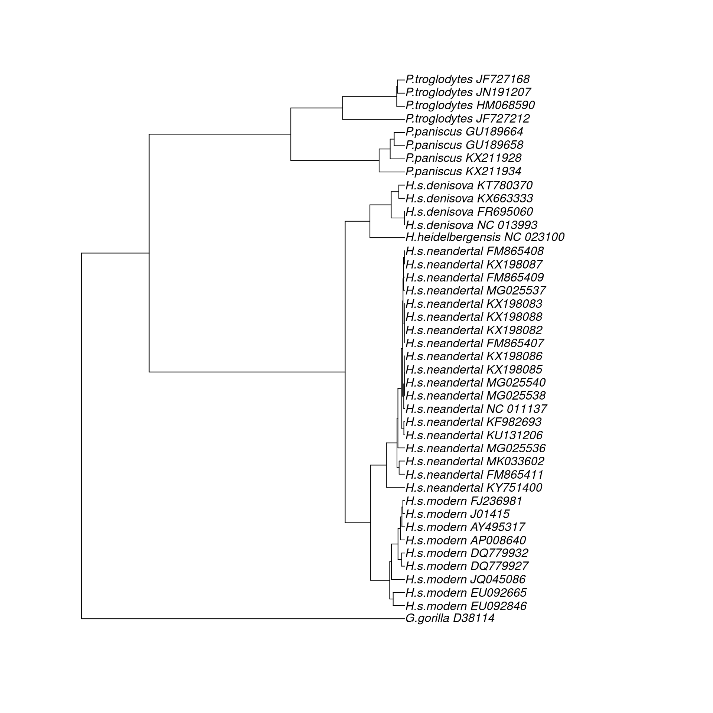
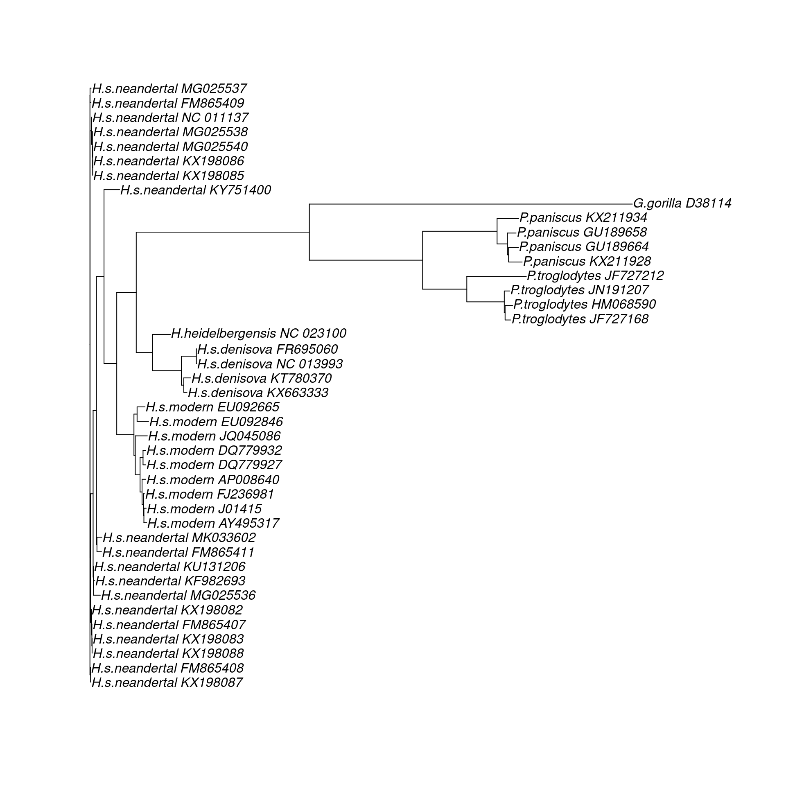
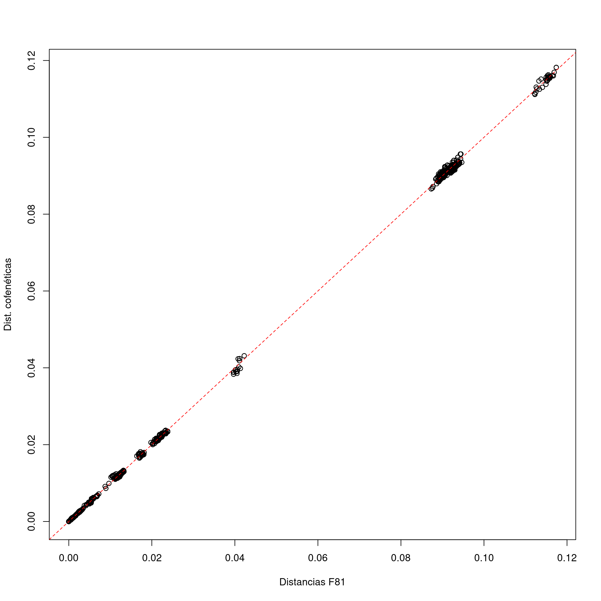

¿Puedes confirmar el número de secuencias? ¿Qué longitud tiene el alineamiento? ¿Qué función usarías para extraer los nombres de las secuencias? El número de secuencias (nseq) son 42. La longitud del alineamiento (nchar) es 16.603 La función que usaría sería la de names(mtdna) ejecutada en la consola de R, nos permite saber a qué corresponde cada secuencia. >names(mtdna)
Árboles basados en distancias
distancias <-dist.ml(mtdna, model ='F81')mt_nj <-NJ(distancias)mt_upgma <-upgma(distancias)plot(mt_upgma)

plot(mt_nj)

Ejercicio
¿De qué clase son los objetos mt_nj y mt_upgma? Si nos fijamos dentro de los documentos, es una lista de las características principales del árbol con los siguientes valores: las especies, los nodos, los valores de las distancias..
Consulta la estructura de estos objetos (str(mt_nj)). Represéntalos gráficamente (plot(mt_nj)) y consulta la ayuda de la función plot.phylo() para saber qué opciones de representación gráfica tienes. type
a character string specifying the type of phylogeny to be drawn; it must be one of “phylogram” (the default), “cladogram”, “fan”, “unrooted”, “radial”, “tidy”, or any unambiguous abbreviation of these.
Para qué sirven las funciones add.scale.bar() y axisPhylo()? > help(“plot.phylo”) > help(“axisPhylo”)
La primera función sirve para añadir una barra horizontal, de manera que le da una escala de longitud al plot de un árbol filogenético.
La segunda función sirve para añadir un eje de relación de algo con otra cosa a un lado del árbol. Por defecto te pone el 0 en el momento actual.
¿Se corresponden bien las distancias evolutivas estimadas con las dataciones? Parece que hay alguna incongruencia en lo que vemos en el árbol
¿Qué secuencias crees que se ajustan menos a su supuesta edad? Se sabe que los denisovanos han evolucionado menos que los chimpancés, y sin embargo en la gráfica se observa la evolución de los denisovanos más avanzada, miwntras que los chimpancés se han quedado atrás sin razón. > plot(mt_nj_rooted,show.tip.label = FALSE)
¿Qué razones puede haber para que la edad de una secuencia no se corresponda con la cantidad de cambios que ha acumulado?
Es posible que haya errores de datación y estemos suponiendo que sean mas antiguos que lo que realmente son. La datacion de fosiles puede ser erronea. Ademas, podrian contener estas secuencias cambios que no son realmente mutaciones ancestrales, sino producto de la degradacion del ADN, que se ha fragmentado. Existen metodos estadisticos para corregirlo, pero tal como aparece la ordenacion de las secuencias de denisovanos, parece que han acumulado mas mutaciones, que podria ser errores de secuenciacion o producto del ADN. Otra cosa que comprobaria es irme al Apéndice, consultar las referencias y ver si realmente la edad es la que dicen. lo que es obvio es que aqui se han acumulado mas cambios.
Distancias
distMat <-as.matrix(distancias)
# Esto son vectores lógicos que podemos usar después para seleccionar filas# y columnas de la matriz de distancias.modernos <-startsWith(colnames(distMat), 'H.s.modern')neandertales <-startsWith(colnames(distMat), 'H.s.neandertal')denisovanos <-startsWith(colnames(distMat), 'H.s.denisova')chimpances <-startsWith(colnames(distMat), 'P.troglodytes')bonobos <-startsWith(colnames(distMat), 'P.paniscus')
mean(distMat[modernos, neandertales])
[1] 0.01214282
Ejercicio
Calcula las distancias medias entre todos los grupos. ¿Cuántas veces mayor es la distancia entre humanos y chimpancés que entre humanos y neandertales?
mean(distMat[modernos, chimpances])
[1] 0.09104153
0,09104153/0.01214282= 7.5 Unas 7.5 veces mayor a la de neandertales y humanos
¿Cómo calcularías la distancia media entre dos secuencias de humanos modernos?
# La submatriz siguiente contiene ceros en la diagonal. Si queremos excluir# del cálculo de la media las distancias entre cada secuencia consigo misma,# habrá que tenerlo en cuenta:distMat[modernos, modernos]
# Por ejemplo:z <- distMat[modernos, modernos]z[z ==0] <-NAmean(z, na.rm =TRUE)
[1] 0.003747961
Humanos modernos consigo mismo no es lo que realmente queremos calcular, por tanto, la media sería un poco más elevada si se eliminan esos valores 0 correspondiente a la comparacion de uno consigo mismo. z es la pequeña matriz de distancias solo entre modernos y modernos, y las posiciones =0 le asignamos NA (no asignados), de manera que nos saca la media sin tener en cuenta esos valores Media: [1] 0.003747961
distCofen <-cophenetic(mt_nj_rooted)
Ejercicio
¿Cuánto se parecen las distancias estimadas a las distancias cofenéticas?
# Aquí usamos las matricees como vectores:plot(distMat, distCofen, xlab ='Distancias F81', ylab ='Dist. cofenéticas')abline(a =0, b =1, col ='red', lty =2)

Dado que hemos establecido la pendiente=1 (b) como la linea roja, y todos los puntos se han posicionado en esa linea, diriamos que si que son iguales. # Limpieza o filtrado del alineamiento
crudas <-dist.dna(as.DNAbin(mtdna), model ='raw')crudas <-as.matrix(crudas)identicas <-which(crudas ==0&lower.tri(crudas), arr.ind =TRUE)# posiciones de la semimatriz inferior donde las distancias son 0:identicas
# La exclamación ("!") invierte el valor lógico de lo que la sigue.# La función "grepl()" produce un vector lógico con "TRUE" donde los nombres# de las secuencias contienen alguna de esas palabras.mtdna37 <- mtdna[!grepl('(KX198085|KX198086|KX198082|KX198088|KX198083)',names(mtdna)), ]mtdna37
37 sequences with 16603 character and 974 different site patterns.
The states are a c g t
Ejercicio
¿Serías capaz de crear otro conjunto de datos, mtdna28, que sólo contenga secuencias del género Homo?